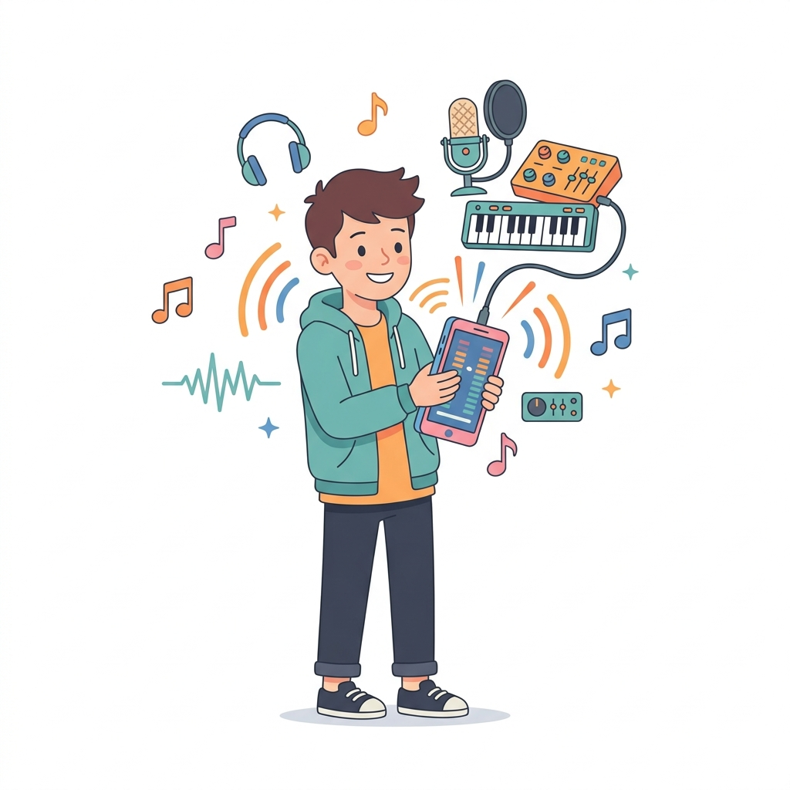
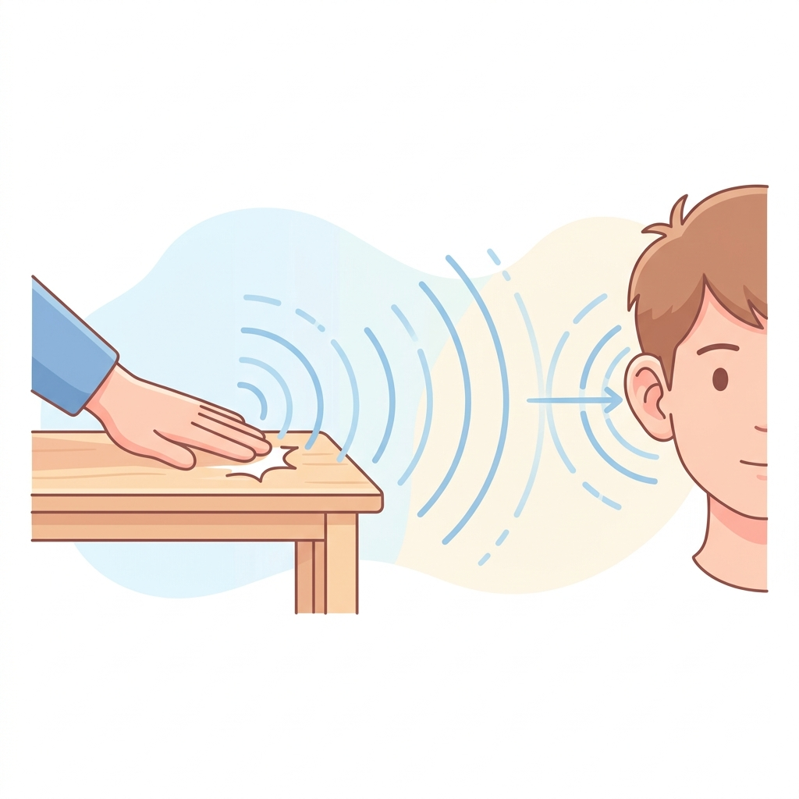
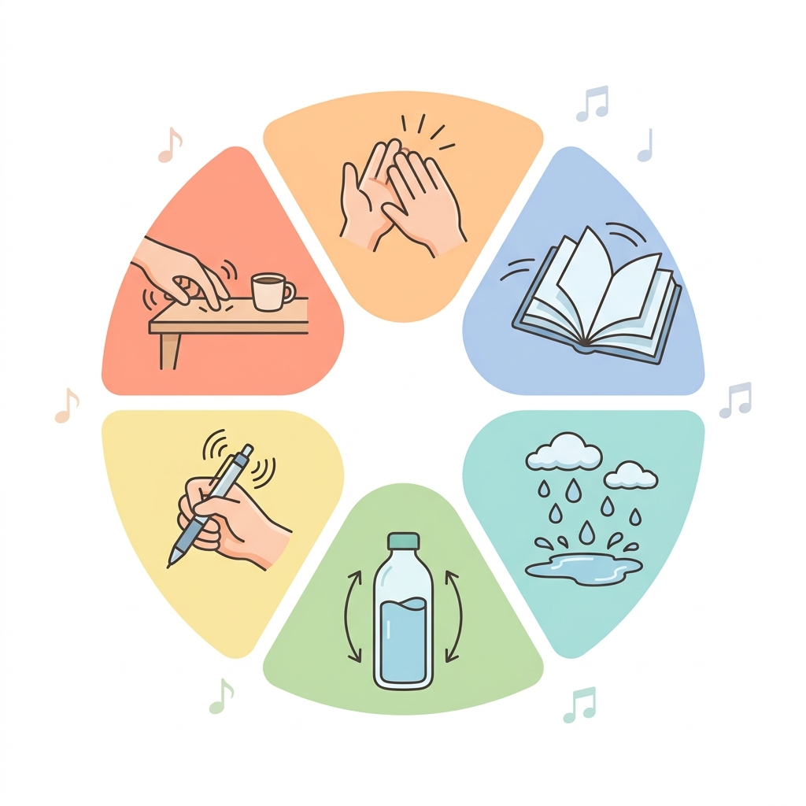
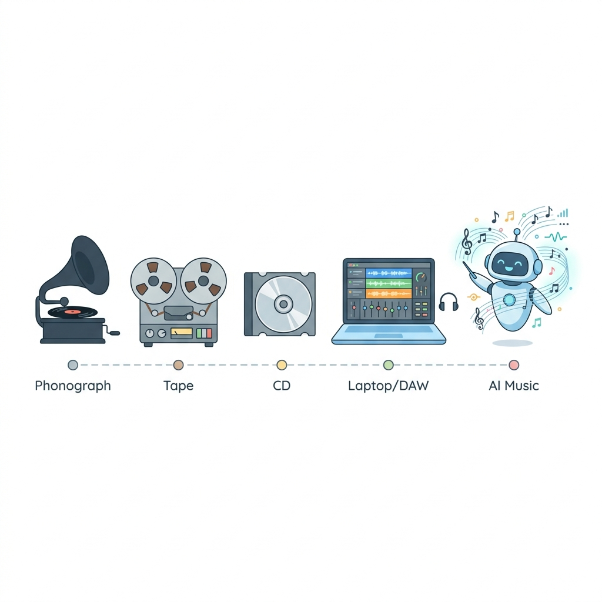
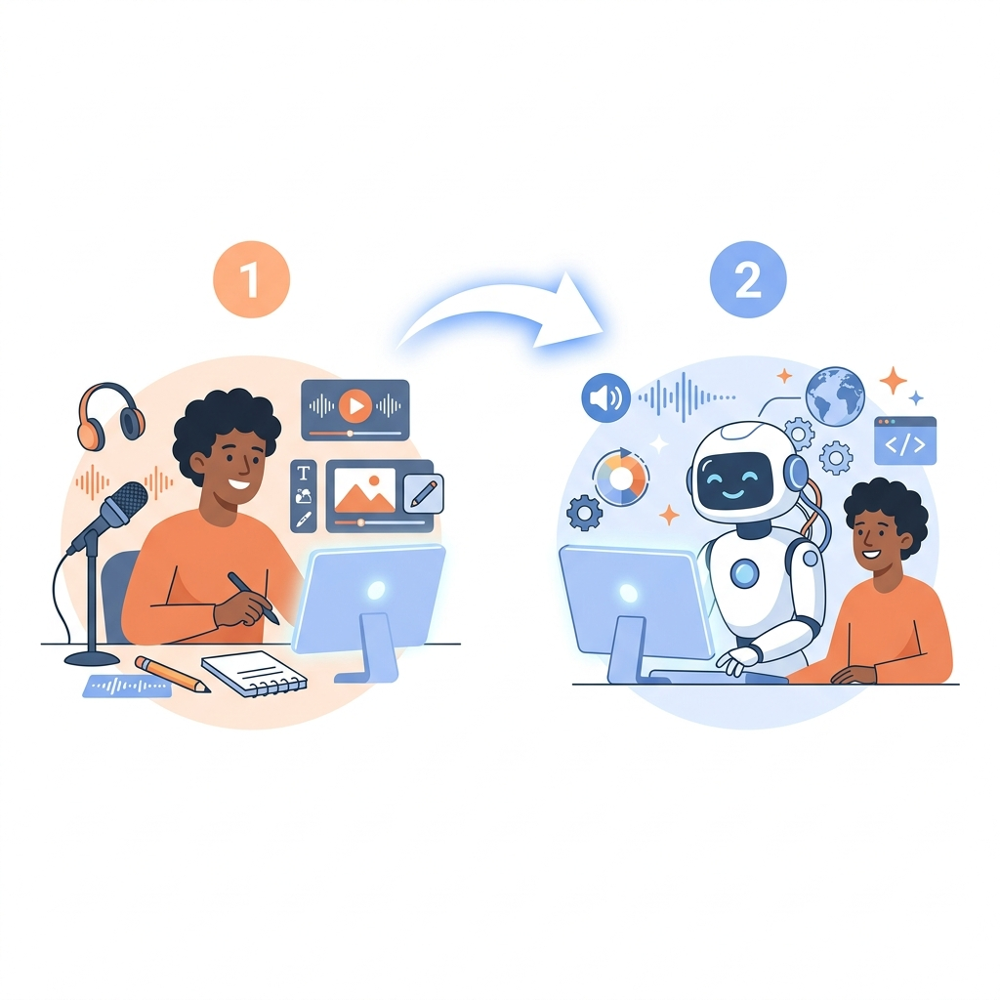

คาบที่ 1 · เทคโนโลยีดนตรีและการสร้างสรรค์เสียงด้วย AI
เริ่มต้นทำความรู้จักกับ "เสียง" รอบตัวเรา
และเครื่องมือที่จะเปลี่ยนเสียงธรรมดาให้กลายเป็นดนตรี
โรงเรียนสุรศักดิ์มนตรี · ครูเอกณัฐ ลุผลแท้ · ม.4
วิชานี้ไม่ต้องอ่านโน้ต ไม่ต้องเล่นเครื่องดนตรี ใช้แค่ มือถือ กับ ความอยากรู้ ก็พอ
ใช้การฟังและความรู้สึกเป็นหลัก
มือถือ = สตูดิโอพกพา
ดูจากความพยายาม ไม่ใช่ความเพราะ

มาทำความรู้จัก "เสียง" ในแบบที่ง่ายที่สุด
เมื่อเราตีโต๊ะ โต๊ะจะสั่น → อากาศรอบๆ สั่นตาม → เดินทางมาถึงหู → สมองแปลงเป็น "เสียง"
ลองทำตาม: วางมือบนลำคอ แล้วพูดว่า "อา~~~" จะรู้สึกว่าคอสั่น — นั่นคือการสั่นสะเทือนที่ทำให้เกิดเสียง!
รู้ไหม? ในอวกาศไม่มีเสียง เพราะไม่มีอากาศให้สั่น! ฉากระเบิดใน Star Wars จริงๆ แล้วเงียบสนิท 🤫

ตีแรง = ดัง · ตีเบา = เบา
เสียงนกร้อง = สูง · เสียงฟ้าร้อง = ต่ำ
ทำไมกีตาร์กับเปียโนเสียงต่างกัน?
เสียงซ้ำเป็นรูปแบบ เช่น ติ๊ก-ต่อก
👆 ลองเลื่อน slider ดู — ความดัง-เบา เปลี่ยนอารมณ์ของเสียงอย่างไร?
ลองปิดตา แล้วตั้งใจฟังเสียงรอบตัว
ทุกคนสร้างดนตรีได้ ไม่ต้องเล่นเครื่องดนตรีเป็น
ไม่จำเป็นต้องมีเครื่องดนตรี! แค่จัดเสียงให้มี Pattern ก็กลายเป็นดนตรีได้
หัวใจของดนตรี — ลองตบมือ 1-2-3-4 ก็คือจังหวะแล้ว!
เสียงสูง-ต่ำที่ร้อยเรียงกัน ลองฮัมเพลงที่ชอบ นั่นคือทำนอง!
เสียงหลายเสียงดังพร้อมกัน แล้วเข้ากันอย่างลงตัว
เพลงสนุก เพลงเศร้า เพลงน่ากลัว ดนตรีสร้างอารมณ์ได้!
🎶 ดนตรีอยู่รอบตัวเรา — เสียงฝนตก เสียงรถไฟ เสียงคนพูดในตลาด ล้วนเป็น วัตถุดิบดนตรี ได้
กดปุ่มเพื่อ "เคาะ" เสียง — ลองสร้างจังหวะง่ายๆ
💡 ในคาบจริง เราจะอัด "เสียงเคาะ" แบบนี้ด้วยมือถือ!

👆 กดที่การ์ดเพื่อดูรายละเอียดเพิ่มเติม
สร้างดนตรีจากถังขยะ ไม้กวาด ไฟแช็ก
กดเพื่อดูเพิ่ม ↓
STOMP เป็นการแสดงระดับโลกที่เริ่มในอังกฤษปี 1991 แสดงบน Broadway มากกว่า 29 ปี! ไม่มีเครื่องดนตรีแม้แต่ชิ้นเดียว ไม่มีบทพูด ใช้แค่จังหวะ 🔥
🔎 ลองค้นหา "STOMP" บน YouTube!
ใช้แค่เสียงคนล้วนๆ ไม่มีเครื่องดนตรี
กดเพื่อดูเพิ่ม ↓
Bobby McFerrin ใช้แค่เสียงร่างกายล้วนๆ — เสียงร้อง เสียงปรบมือ เสียงดีดนิ้ว ไม่มีเครื่องดนตรีเลย! แต่ติดอันดับ 1 ชาร์ตเพลง Billboard ปี 1988 🎵
เสียงในเกมอัดจากของจริง!
กดเพื่อดูเพิ่ม ↓
เสียงเดินบนหญ้า เสียงขุดดิน เสียงจุดไฟ ใน Minecraft ส่วนใหญ่อัดจากเสียงของจริง! นักออกแบบเสียง (Sound Designer) ออกไปอัดเสียงข้างนอกแล้วนำมาตัดต่อ ✨
เสียงไดโนเสาร์มาจากสัตว์จริง!
กดเพื่อดูเพิ่ม ↓
Gary Rydstrom ผสมเสียงลูกสุนัข + ช้าง + จระเข้ + วาฬ เข้าด้วยกัน! คนทำเสียงในหนังเรียกว่า Foley Artist — ใช้ของจริงสร้างเสียง Effect ทั้งหมด 🎬
💡 Ben Burtt นักออกแบบเสียงของ Star Wars ค้นพบเสียงนี้โดยบังเอิญ!
จากเครื่องเล่นแผ่นเสียง สู่ AI สร้างเพลง

สมัยก่อน ต้องมีสตูดิโอราคาแพงนับล้าน · สมัยนี้ มือถือเครื่องเดียว + แอปฟรี = สร้างเพลงได้เลย!
AI เรียนรู้จากเพลงนับล้านเพลง แล้วสร้างเพลงใหม่ตาม "คำสั่ง" (Prompt) ที่เราบอก
สร้างเพลงพร้อมเสียงร้องจาก Prompt
ช่วยคิดไอเดีย เขียนเนื้อเพลง ปรับ Prompt
ตัดต่อเสียง วาง Track สร้าง Demo
เลือกตัวเลือกด้านล่าง แล้วดู Prompt ที่จะได้
🎵 แนวเพลง
😊 อารมณ์
📝 เนื้อหา
🗣️ ภาษา
💡 ในสัปดาห์ที่ 11-12 เราจะเรียนเขียน Prompt แบบจริงจัง!
ปี 2023-2024 เพลง AI ที่เลียนแบบเสียง Drake ไวรัลบน TikTok ทำให้ทั่วโลกถกเถียงเรื่องลิขสิทธิ์
เทรนด์สร้างเพลงจาก Prompt แปลกๆ เช่น เพลงจากตารางสอบ 😂 เพลงเกี่ยวกับข้าวมันไก่ 🐔
มนุษย์ต้องเริ่มก่อนเสมอ — AI เป็นผู้ช่วย ไม่ใช่ผู้ทำแทน

เปรียบเทียบ: เหมือนเขียนรายงาน — เราต้องคิดหัวข้อ หาข้อมูล เขียนร่างเองก่อน แล้วค่อยใช้ AI ช่วยตรวจแก้ ไม่ใช่ให้ AI เขียนทั้งหมดแล้วส่ง
🎨 เหมือนวาดรูป — เราร่างภาพก่อน แล้วใช้ AI ช่วยแต่งสี
🍳 เหมือนทำอาหาร — เราเลือกเมนู เลือกวัตถุดิบ ลงมือทำ AI เป็นเพื่อนคอยแนะนำ
เราจะเรียนรู้ตามขั้นตอนนี้ตลอด 18 สัปดาห์
มนุษย์ทำเอง 100%
มนุษย์ + AI ร่วมกัน
ทั้งหมดเป็นแอปฟรี ใช้ได้บนมือถือ
สตูดิโอพกพา อัดเสียง ถ่ายวิดีโอ
ใช้ตั้งแต่คาบแรกตัดต่อเสียง วาง Track สร้าง Demo
ฟรี 100%ช่วยคิดไอเดีย ปรับเนื้อเพลง เขียน Prompt
ผู้ช่วยคิดสร้างเพลงจาก Prompt ต่อยอดจาก Demo
ใช้หลังมี Demoเครื่องมือเหล่านี้เป็นแค่ "ตัวช่วย" — ไอเดียและความคิดสร้างสรรค์ของพวกเรา คือสิ่งที่สำคัญที่สุด
เน้น กระบวนการ ไม่ใช่ ความเพราะของเพลง
| องค์ประกอบ | คะแนน | สิ่งที่ดู |
|---|---|---|
| 👂 การฟังและวิเคราะห์เสียง | 10 | ฟังตั้งใจ อธิบายอารมณ์เสียงได้ |
| 🎙️ การอัดเสียงด้วยมือถือ | 15 | คุณภาพเสียง ความหลากหลาย |
| 🎨 วัตถุดิบเสียง | 10 | มี Ambience, Percussion, Voice |
| 🎛️ BandLab + Human Demo | 25 | ตัดต่อ จัดวาง track ปรับเสียง |
| ✍️ Prompt + ChatGPT | 15 | เขียน Prompt ได้ดี ปรับปรุงได้ |
| 🤖 Suno + เปรียบเทียบ | 20 | ต่อยอดจาก Demo + วิเคราะห์ก่อน-หลัง |
| 🎤 นำเสนอ + Reflection | 5 | สื่อสารสิ่งที่เรียนรู้ได้ |
💡 ร้องไม่เพราะ ไม่เป็นไร! เน้นกระบวนการ ความพยายาม และการอธิบาย
สัปดาห์หน้าใช้มือถือออกไปอัดเสียงรอบโรงเรียน 3-5 เสียง แล้วอธิบายว่าเสียงนั้นให้ความรู้สึกอย่างไร
"เด็กต้องเริ่มจากเสียงของตัวเองก่อน แล้วใช้เทคโนโลยีและ AI ช่วยขยายความเป็นไปได้ของเสียงนั้น อย่างรับผิดชอบ"
เลือกคำตอบที่ถูกต้องที่สุด